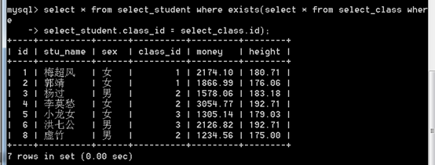
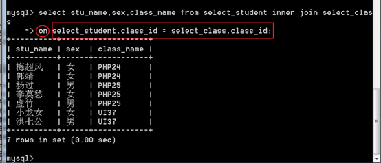
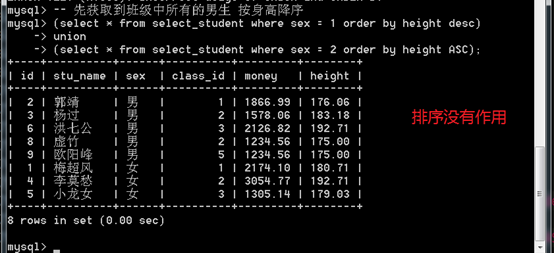

MySQL 高级查询
数据查询
查询数据是整个业务逻辑中使用的最多而且也是最复杂的！
1 | select [字段表达式列表子句][from子句] [where 子句][group by 子句] [having 子句][order by子句] [limit 子句] |
七子句
from子句的后面的子句称五子句
注意它们的书写顺序不能乱。
字段表达式列表子句
1 | -- 示例 |
as关键字可以省略 不建议省略
凡是涉及到表达式到一定会牵扯到一个问题：优先级
加上小括号，可提升优先级。
from子句
表示查询的来源，通常是表！

1， 可以写表名列表，使用逗号分割。
1 | select * from my_table1,my_table2; |
如果此时没有条件，相当于形成了一个 笛卡尔积！
A表的所有记录，都与B表的所有记录之间存在关联！
出现了同样的字段名 可以用as关键字给字段取别名
1 | select stu.id as s_id,class.id as c_id, name,class_name from stu,class; |
2， 表的别名
如果多次出现 表名.字段名的情况，可以为表名起别名！
如下s.id 中的 s使用的是后面定义的表别名
1 | select s.id as s_id,c.id as c_id, name,class_name from stu as s,class as c; |
3， dual 虚拟表
1 | select 3+5 from dual; |
where子句
where 条件表达式
省略where子句，相当于永远为真
1 | -- 永远为真 |
比较运算符
> < >= <= != =
1 | -- 查询stu表中id>4的所有记录 |
模糊查询
使用like关键字进行模糊查询
可以使用 %和 _作为通配符
% 匹配任意字符的任意次数（包括0次）的组合_ 匹配任意一个字符
1 | -- like 像 |
between and
范围比较，而且是闭区间！
比如，between 5 and 10，相当于数学上的[5,10]
1 | -- 在 2和4之前 |
in与not in
都属于集合运算符，用于判断前面的元素是否在或不在一个集合当中！
批量删除这个操作用的特别多。
in，在某个集合之内
in (元素列表)
1 | select * from stu where id in(3,4,8); |
not in，不在某个集合内
not in (元素列表)
1 | select * from stu where id not in(3,4,8); |
null 值的判断
不能使用普通的运算符，因为运算的结果都是null，而且不能作为查询条件！
应该使用 is null 或者 is not null 来判断！
1 | -- is null 是空值 |
函数 （isnull()）也可以完成类似的判断1
2
3
4
5-- isnull() 是空值
select * from stu where isnull(id);
-- ! isnull() 不是空值
select * from stu where !(isnull(id));
group by子句
对查询结果（已经通过where子句过滤之后的数据），按照某个字段，进行分组！
语法：group by 字段
在分组的结果中，只会显示组内的头一条记录！因此，通常，分组之后的数据，除了分组的字段外，其他字段的逻辑含义很轻！
分组的作用，不在查询每个组内的具体数据。而其作用主要是在分组统计上。
统计函数（聚合函数）
count()：求某个组内非null记录的个数。
通常就用count()来表示 统计记录数。典型的使用是 count()，但是除了*之外，是可以使用字段名的！
1 | select count(*) as c from my_table where 1 group by id; |
sum()：求和。
先根据某个或某几个字段进行分组，然后再对每一个组的某个字段进行相加！
1 | select sum(age) from my_table where 1 group by id; |
max()：求某个组内某个字段的最大值
1 | select max(age) from my_table where 1 group by id; |
min()：求某个组内某个字段的最小值
1 | select min(age) from my_table where 1 group by id; |
avg()：求某个组内某个字段的平均值
1 | select avg(money) from my_table where 1 group by id; |
分组后排序
分组成默认是升序(ASC)
DESC 降序
语法：
group by 字段名 ASC|DESC
1 | select * from my_table where 1 group by id desc; |
多字段分组
group by 字段1，字段2……
1 | select * from my_table where 1 group by id,age desc; |
回溯统计
回溯（su）统计
其实就是向上统计！
在进行分组统计的时候，往往需要做向上统计！
比如，先统计各个班的最高分，然后就可以将各个班的最高分再进行一次统计，可以得到全年级的最高分！
在MySQL中，也支持回溯统计，其实就是在group by语句的后面加上with rollup即可！
1 | select * from my_table where 1 group by id with rollup; |
having子句
功能上与where类似，都是条件子句！通常与聚合函数配合使用。
主要的区别，在于执行时机：
where，是开始时，从数据源中检索数据的条件。
having，是在筛选，分组之后，在得到的结果中，再次进行筛选的语法！
因此 having的结果 一定是 where 已经 过滤之后的结果!
1 | select avg(money) as m from my_table where 1 group by id having m>2000; |
order by 子句
对结果进行排序的语句！
语法：
order by 字段名 [asc|desc], [字段名 [asc|desc],...]
asc 升序 desc 降序
1 | select * from my_table order by id desc; |
可按照多个字段进行排序
1 | -- 先让 id 排序，再让 age 排序 |
limit 子句
限制 结果记录的数量！
从所有的结果中，选择部分结果的字句。
可以从 某个位置开始，取得多少条！
语法：
limit start, size;
start ：起始位置size：取得的记录数
1 | -- 从第2条记录开始，获取5条记录 |
记录的起始下标为0

注意，第二个参数是 长度，而不是 终止位置！
limit使用的最多的地方就是用在分页！取得数量可理解为每页显示的数量。
子查询
概念
简单来说，所谓的子查询，就是一条select语句中又出现了其他的select语句！
要求：子查询的语句必须用一对括号括起来！
1 | select * from stu where height=(select height from stu order by height desc limit 0,1); |
子查询的分类
两种分类依据：
1 依据 子查询出现的位置！
where型子查询 ， 出现在where子句内！
from 型子查询， 出现在from子句内！
2 依据 子查询的返回数据的格式！
标量子查询，返回值是一个数据，称之为标量子查询！ 一行一列的二维表
列子查询，返回一个列，多行一列的二维表
行子查询，返回一个行，一行多列的二维
表子查询，返回的是一个二维表
from型 表子查询
from型子查询一般就是当成一张表来使用，而且大部分出现在from之后，作为数据源！
1 | select * from (select * from stu where 1) as temp where 1 group by temp.id; |
列子查询
我们通常把列子查询的结果当成一个集合来使用！
所以，通常就是配合in或not in来使用列子查询！

行子查询
一次性查出来一个行（多个行）使用 行进行匹配

exists型子查询
exists子查询的目的不是为了产生结果集，只是用来判断某个子查询是否查询到了数据！
exists子查询返回的是一个布尔值！
如果查询到了结果，就返回true（1），如果没有查询到数据，就返回false（0）
exists出现在where条件里面

连接查询
连接，多个表记录之间的连接！
关键字 ： join
语法：from 表名1 join 表名2 on 连接条件
join ，连接on ，连接条件
分类：
内连接
外连接(左外连接，右外连接)
交叉连接
自然连接
内连接，inner join
记录与真实的记录连接，称之为内连接！（两条真实存在的记录的连接）
mysql默认的连接就是 inner join

内连接，可以连接省略条件！
on 可以省略：相当于连接条件永远成立！
返回值是一个 笛卡尔积！
外连接，left join，right join
分成：左外连接left join，右外连接right join
连接的记录，可能是一方不存在的！（两条记录中，可能某条不存在）
注意：外连接一定要有连接的条件

内连接，外连接差别不大，只是外连接会将没有连接成功的记录，也出现最终的连接的结果内，而内连接，连接的结果只有连接成功的（两条记录都存在的）
什么是左表 和 右表？
join关键字前面的（左边的）左表，join关键字后边的（右边的）右表！
左外：如果出现左表记录连接不上右表记录的，左表记录会出现正在最终的连接结果内！而右表记录相应设置成NULL。
右外：如果出现右表记录连接不上左表记录的，右表记录会出现正在最终的连接结果内！而左表记录相应设置成NULL。
总结：左外连接它是以左表为主，右外连接它是以右表为主
左右外连接其实它们可以是一样的 ，只需要换表所在的位置
工作中使用最多就是左外连接
交叉连接，cross join
结果与 内连接一致！
交叉连接 相当于 是 没有条件的内连接！
内连接：

交叉连接：

自然连接，natural join
自然连接它是拿多个表中相同的字段名来作为连接的条件
mysql，自动判断连接条件，帮助我们完成连接！
连接条件，on，using
on，后面使用一个连接条件表达式！

using(连接字段)，要求使用同名字段进行连接！

union查询，联合查询
将 多个查询的结果，并列到一个结果集合内！
union要求两个表中的字段的数量要一样
如果union 联合查询，集合里面字段的值是一样的话 ，会去重
排序没有起作用

解决办法，添加 limit

select语句的选项
distinct，取消相同的记录，即 去重复。
默认是 all，可以不写，表示所有的记录都出现！
1 | select distinct age from stu; |